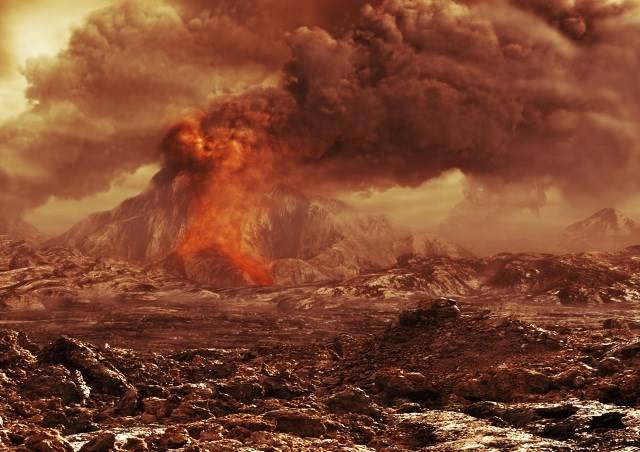
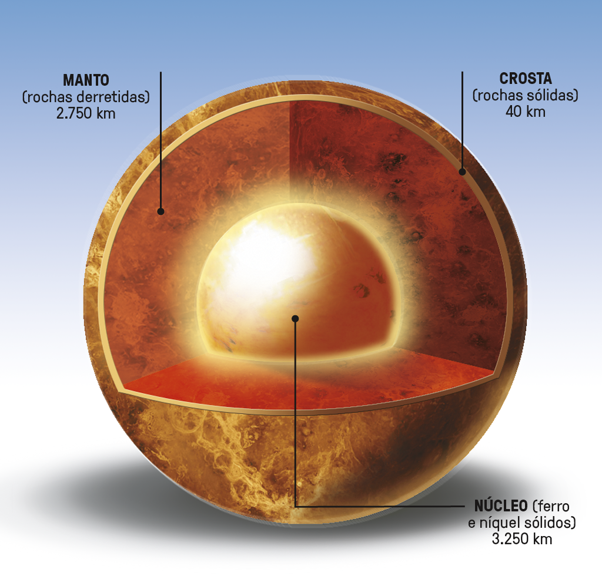
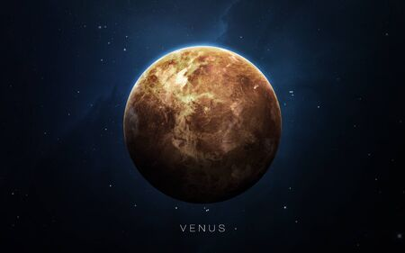

Vênus
O Planeta Ardente e Enigmático
Vamos explorar o mundo de Vênus, frequentemente chamado de "gêmeo da Terra" devido a algumas semelhanças. No entanto, Vênus é um planeta com características verdadeiramente únicas. É um planeta fascinante que, apesar de sua beleza noturna, esconde condições extremas em sua superfície. Sua história na mitologia e sua conexão com a Terra o tornam um objeto de estudo e admiração há séculos.
Ambiente Inóspito
Imagine um lugar onde a temperatura na superfície seja suficiente para derreter chumbo. Esse é Vênus. Por causa da composição química de sua atmosfera é criado um efeito estufa extremo, tornando-o o planeta mais quente do sistema solar, mesmo estando mais afastado do Sol do que Mercúrio. As temperaturas podem superar 450°C
Além do calor intenso, a pressão atmosférica em Vênus é esmagadora, cerca de 92 vezes maior do que na Terra. Isso é equivalente a ficar a 900 metros abaixo da superfície do oceano terrestre. Além de uma superfície marcada por planícies vulcânicas, montanhas e vastas planícies rochosas. Uma das características notáveis é a planície vulcânica conhecida como Planície de Vênus, que abriga vulcões e fluxos de lava.
Composição Química
A composição química da superfície de Vênus é predominantemente rochosa, com a presença de minerais e elementos que compõem rochas basálticas e outros materiais vulcânicos.
Como os silicatos que são os principais constituintes das rochas vulcânicas em Vênus. Eles incluem minerais como o feldspato, a olivina e a piroxena. Esses minerais são ricos em silício e oxigênio e formam a base das rochas basálticas encontradas na superfície.
Também hão de haver os óxidos de ferro, como a hematita e a magnetita, que também estão presentes na superfície de Vênus. Eles contribuem para a coloração avermelhada e marrom das rochas e do solo.
Enquanto atmosfera de Vênus é composta principalmente de dióxido de carbono (CO2), que representa cerca de 96,5% de sua composição. Além do CO2, existem traços de nitrogênio (aproximadamente 3,5%) e vestígios de vapor d'água, ácido sulfúrico, argônio, hélio, neon e outros gases.
Essa atmosfera densa e rica em CO2 é responsável pelo efeito estufa extremo e pelas temperaturas escaldantes da superfície de Vênus. A presença de ácido sulfúrico cria um ambiente altamente corrosivo. Isso significa que, mesmo se uma espaçonave aterrissasse em Vênus, ela não duraria muito tempo devido à atmosfera hostil.
Curiosidades
Dia Peculiar: Vênus tem uma rotação incrivelmente lenta, levando 243 dias terrestres para girar uma vez. E o mais curioso é que gira na direção oposta à maioria dos outros planetas.
Estrela da Manhã e Estrela da Tarde: Vênus é frequentemente visível no céu noturno. Às vezes é chamada de "Estrela da Manhã" quando aparece no leste antes do amanhecer e "Estrela da Tarde" quando se põe no oeste após o pôr do sol.
Menos Crateras do que a Lua: Apesar de sua falta de atmosfera significativa, Vênus tem menos crateras de impacto em sua superfície do que a Lua. Isso ocorre porque sua densa atmosfera queima e desintegra muitos objetos antes que eles atinjam o solo.
